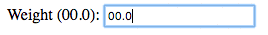
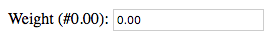
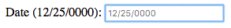

Customizando campos de formulário com o mask-amd
Publicado em:
@rapahaeru
Sempre procuramos uma biblioteca que seja bem focada no problema que queremos resolver e frequentemente encontramos aqueles pacotes com várias funcionalidades. Normalmente, utilizamos apenas um recurso (ou alguns) da biblioteca que escolhemos utilizar.
É importante mencionar o peso inútil no final do carregamento da página, agora imagine quando você utiliza várias bibliotecas em seu site.
Esse tipo de situação é muito comum e, pensando nesse problema, nós do Elo7 resolvemos escrever nossas próprias bibliotecas, diretas no que necessitamos na casa, e isso vem sendo bem bacana pois, além de otimizar nossas aplicações, ainda as disponibilizamos para comunidade.
Nesse post, iniciando um trabalho de demonstração dessas bibliotecas, vou apresentar a mask-amd, que foca exclusivamente em facilitar a entrada de valores em campos de formulário seguindo uma formatação pré-determinada.
Quando a biblioteca mask-amd é útil?
Sabe quando o formulário possui aqueles campos de medida (como peso em quilos ou distância em quilômetros)?
O mask-amd permite que você formate esses inputs da maneira que achar necessário, apenas adicionando um novo atributo com o pattern desejado. Antes dos exemplos práticos, vou demonstrar como incluir o mask-amd no seu projeto.
Onde encontrar
Você pode baixar diretamente do nosso repositório, ou através do gerenciador de pacotes NPM.
Para instalar através do NPM:
$ npm install elo7-mask-amd
Agora inclua o arquivo “mask-amd.js” no HTML de sua aplicação.
<script src='mask-amd.js'></script>
Lembrando que este arquivo originalmente virá no node_modules/elo7-mask-amd/mask-amd.js. Recomendo que mova esse arquivo. No exemplo acima, o arquivo foi movido para a raiz do projeto.
Ficando, por completo, assim:
<!DOCTYPE html>
<html lang="en">
<head>
<meta charset="UTF-8">
<title>Mask-amd implementation examples</title>
<style>
label {
display: block;
}
</style>
</head>
<body>
<h1>Mask-amd implementation examples</h1>
<form action="#">
<fieldset>
<!-- monetary -->
<label for="monetary-1">
Monetary (#0.00):
<input type="text" id='monetary-1' mask-number='#0.00' placeholder='0.00'>
</label>
.
.
.
</fieldset>
</form>
<script src='node_modules/define-async/async-define.js'></script>
<script async src='node_modules/elo7-events-amd/events-amd.js'></script>
<script async src='node_modules/elo7-doc-amd/doc.js'></script>
<script async src='mask-amd.js'></script>
</body>
</html>
Compreendendo as dependências
Observando o código acima, nota-se que existem chamadas externas de scripts além do mask-amd.
<script src='node_modules/define-async/async-define.js'></script>
<script async src='node_modules/elo7-events-amd/events-amd.js'></script>
<script async src='node_modules/elo7-doc-amd/doc.js'></script>
São dependências importantes para que o mask-amd possa funcionar corretamente.
Portanto, ao instalar o mask-amd via npm, esses outros scripts serão baixados juntos. Basta chamá-los em seu html.
Uma dessas dependências é a doc-amd, que é uma biblioteca desenvolvida pela equipe de front-end do Elo7 para manipulação do DOM. O doc-amd merece um post à parte, que futuramente publicaremos aqui.
Mas por que o AMD?
O mask-amd foi projetado para trabalhar com módulos assíncronos (AMD). Não é o objetivo desse post explicar o AMD em detalhes, mas o que é importante para nós nesse ponto é que o AMD permite carregar nosso código em módulos, e definir as dependências necessárias para o nosso projeto ser executado.
No caso da mask-amd, definimos que este módulo só será executado caso o doc-amd esteja disponível na aplicação.
define('mask', ['doc'], function($) {
Aqui estamos definindo que o nome do nosso módulo é “mask” e ele depende do módulo doc-amd, que originalmente é chamado por “doc”.
O “$” é a representação do módulo importado doc.
Implementação no código
Basicamente a biblioteca utiliza hoje dois tipos de atributos nos campos do HTML, o mask-number e o mask:
- ### O atributo mask-number
Esse atributo deve ser utilizado nos campos onde você deseja receber apenas formatação numérica.
A biblioteca adota um pattern dinâmico, para suportar grande variedade de casos de uso. Imagine seu campo assim:

<label>
Peso (00.0):
<input type="text" id='peso'>
</label>
Pensando exatamente como a label supõe, precisamos que:
* Sejam apenas números;
* possuam exatamente 3 números;
* e que o caracter separador seja um ponto.
<label>
Peso (00.0):
<input type="text" id='peso' mask-number='00.0'>
</label>
Apenas adicionamos o atributo mask-number com o pattern desejado.
Mas, e se eu quiser inserir no mínimo 3 caracteres e também queira ter no máximo 4? Deixando claro:
- Obrigatoriedade de 3 caracteres no mínimo;
- máximo de 4 caracteres;
- e que sejam apenas números.

<label>
Peso (0.00):
<input type="text" id='peso' mask-number='#0.00'>
</label>
Adicionando uma “#” ao conteúdo do atributo mask-number, o input fica aguardando um terceiro caracter, porém sem a obrigatoriedade. Se inserir apenas os dois, ok, mas caso seja inserido três, tudo bem também.
- ### O atributo mask
Este atributo é mais focado nas formatações de formulário, como telefones, datas e até mesmo CPF.
Vamos pensar em uma data agora?

<label>
Data (10/10/2010):
<input type="text" id='data' mask='99/99/9999'>
</label>
Repare que o atributo mudou, agora é apenas mask.
E no caso de nós, brasileiros, um CPF?
<label>
CPF (999.999.999-99):
<input type='text' id='cpf-1' mask='999.999.999-99'>
</label>
E caso precise criar um pattern customizado?
Inventado (99.999-99): <input type='text' mask='99.999-99'>
Também funciona. Fique livre para mascarar da forma que bem entender.
Caso queira um teste live, basta acessar o nosso gh-pages.
Importante deixar claro que o mask-amd não valida os valores do formulário. Caso tenha essa necessidade, sugiro a nossa biblioteca form-amd, que é específica para isso.
Bom, chegamos ao fim! Espero que este artigo tenha sido útil e gostaria de reforçar que estamos sempre abertos a sugestões/melhorias para nossa biblioteca. Fiquem à vontade para colaborar conosco no Github com Issues e Pull Requests.
Obrigado =]